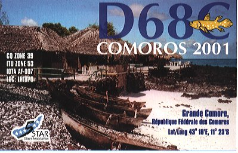
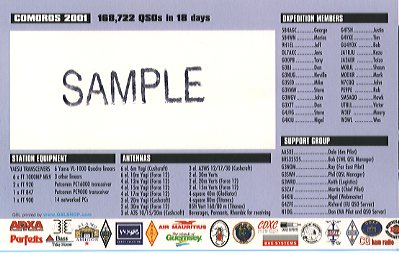
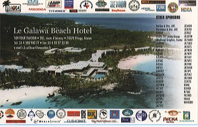

話題の局・QSL
D68C・Comoros




2001年2月にComoros IsからQRVしたD68CのQSL
DX-Peditionの最多QSOの新記録を樹立した。6mのJAは沖縄地区と10 QSO(7局)。
メンバーとしてJAからJA1RJUが参加、50MHzを運用した。
D68C・Comoros



2001年2月にComoros IsからQRVしたD68CのQSL
DX-Peditionの最多QSOの新記録を樹立した。6mのJAは沖縄地区と10 QSO(7局)。
メンバーとしてJAからJA1RJUが参加、50MHzを運用した。